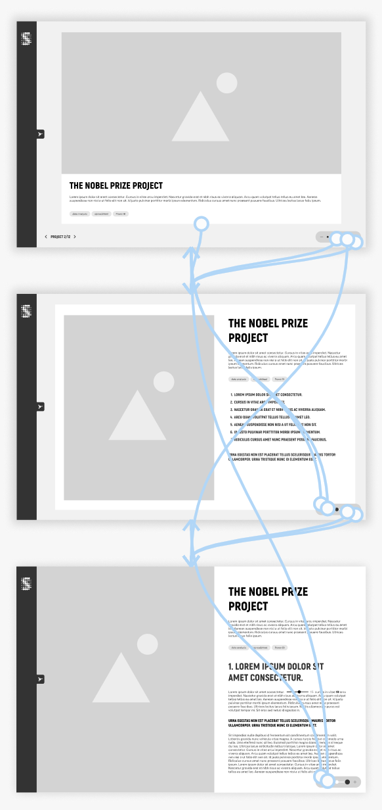
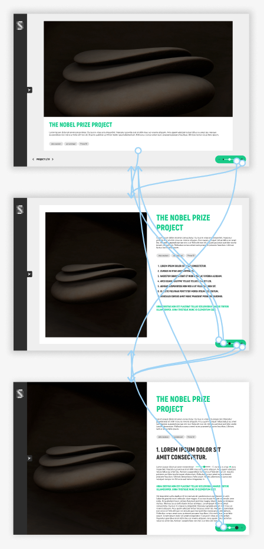

Riffraff/Houdini is an art cinema in Zurich. Its website, riffraff-houdini.ch, combines the film programme and online ticketing with events, a cinema card (Kinokarte), a webshop and a link to streaming on cinu.ch. The audience is mainly adult film lovers from Zurich and the surrounding area who appreciate arthouse films and a good cinema.
visit websiteAs a UX project in the CAS UX/UI at ZHdK, we tested the Riffraff/Houdini website with real users to find out where its key flows cause trouble, and turned the findings into concrete design proposals.
We tested four flows: registering and buying tickets (the main flow), finding a film for inspiration, buying a Kinokarte in the webshop, and booking tickets for a children’s group. We looked especially at navigation, the filter function, how visible the Kinokarte is, and how understandable group booking and seat selection are.
As UX/UI designer, I worked in a team of three with Aurore Bonjour and Brigitte Lampert over two months: one month of conducting interviews, one month of drawing conclusions and redesigning. Within the team I worked on the webshop structure.
• user testing and interview analysis (as a team)
• wireframing
• UI design (in some cases)
• webshop redesign
Tools: Microsoft Teams (interviews and transcription), Claude (summaries), FigJam (preparation), Figma (UI design)
Deliverables: updated wireframes, and UI designs in some cases
Primary: adult film lovers from Zurich and the surrounding area who appreciate arthouse films and a good cinema.
Secondary: families, groups and companies who want to rent rooms or host events.
b
We tested with five people aged 25 to 60. They came from different backgrounds: student, architect, vet and teacher. Each of us asked one or two friends, and the sessions took place in a meeting room.
For case studies with the same structure I always recommend using the Webflow CMS collections because the template page offers consistency across case studies.
In this case however the client decided to use static pages instead of dynamic ones.
Main navigation
The main navigation of the Portfolio is an expandable menu with the case studies. With this solution the user can easily access the landing page and browse between the projects.
View navigation
The portfolio section showcases case studies across three levels of detail. Since this structure is an unconventional approach to presenting information, the challenge was to design a visual solution that clearly communicates the navigation flow and manages user expectations.
From a SEO and marketing perspective, we decided to integrate the three views into a single page. This approach ensures that all views share the same URL, allowing customized transitions between them.

Webflow as a no-code design and development tool known for its flexibility and control over design elements. Webflow’s Designer was used to build the layout and styling while ensuring responsive design across devices.
Technically, the three layers of content are stacked on top of one another, with each layer occupying the full viewport. Initially, only the summary view is visible. As the user zooms in, the more detailed view appears while the summary view is hidden. The user can then navigate through the visible layer using scrolling. Similarly, when zooming out, the detailed view is concealed and a less detailed view is shown.
Since we decided to integrate the three views into a single page I had the possibility to play around with the animations. The user zooms in and out between the views, the goal was to recreate this effect on click.The Zoom in animation from Summary view to Key subject view scales up the window as you would dive into the details. The animation from Key subject view to Detailed view zooms in and grows the project window to full screen. The animations make it easier to understand the structure of the information and the navigation between them.
The navigation between the projects and between the views are also accessible by keyboard. We set up a keyboard combination for each action:
Previous case study: Ctrl + A
Next case study: Ctrl + D
Zoom in: Ctrl + S
Zoom out: Ctrl + W
When the user enters the portfolio, small tooltips are shown to help users navigate around the site. More tooltips show the action of each button on hover interaction.
